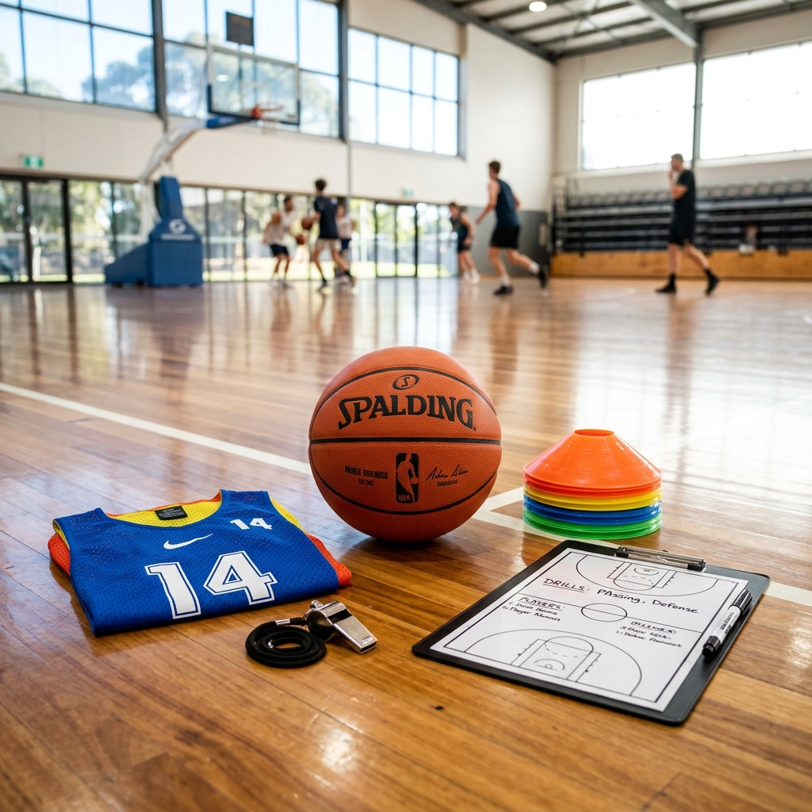
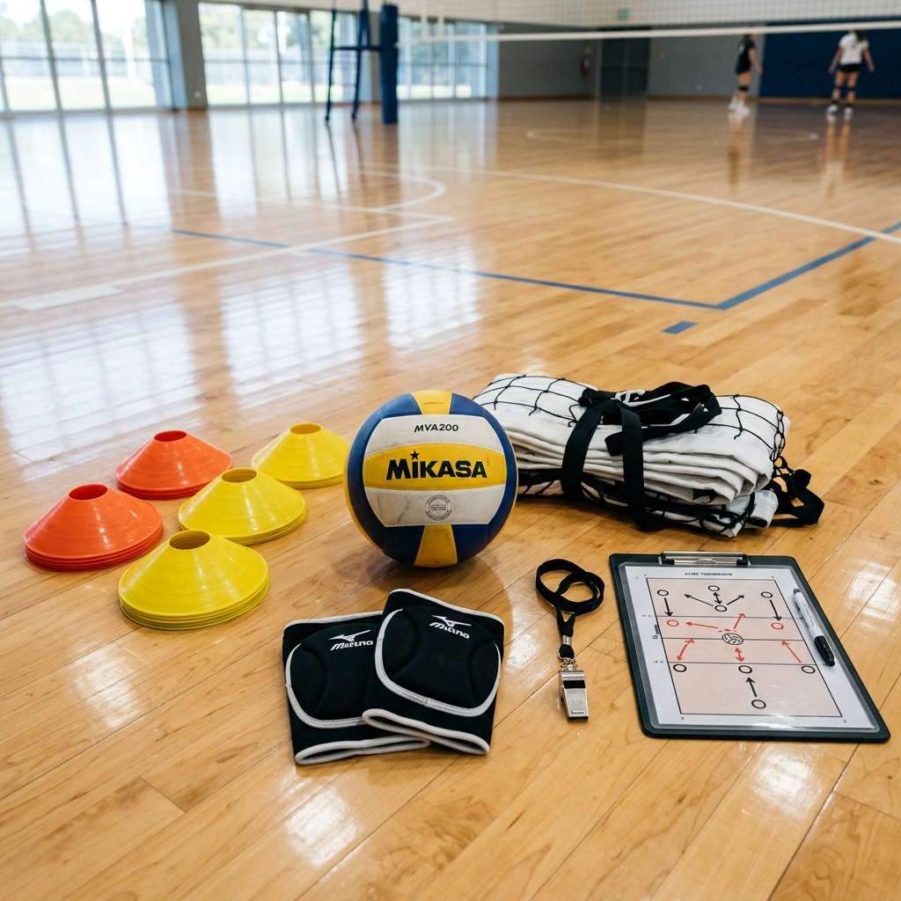
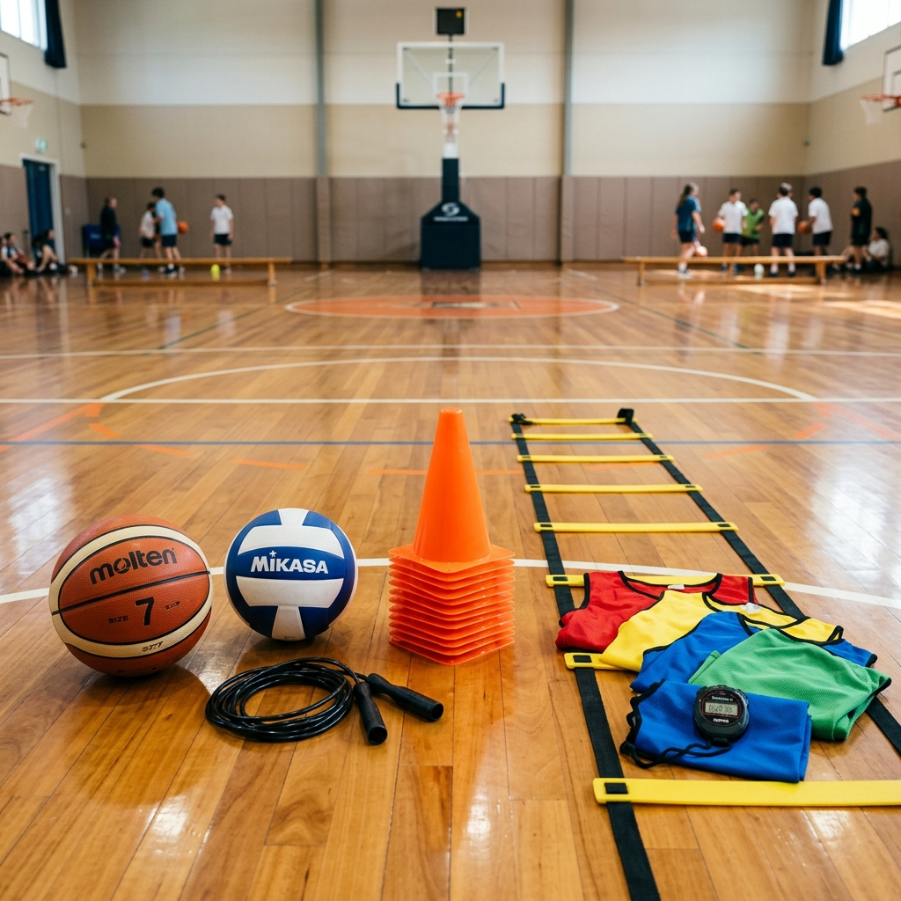

← Kembali ke Artefak
Artefak Pembelajaran
Media Pembelajaran
Informasi Media
| Penyusun | Rafli Daffa Al Fatih |
| Jenis Media | Interaktif & Cetak |
| Tujuan | Meningkatkan efektivitas pembelajaran melalui media yang kreatif |
Deskripsi
Media pembelajaran ini dikembangkan untuk memfasilitasi proses belajar mengajar agar lebih menarik dan mudah dipahami oleh peserta didik. Media ini disesuaikan dengan kebutuhan serta karakteristik peserta didik.
Galeri Alat Pembelajaran
Berikut adalah beberapa contoh alat peraga dan kelengkapan olahraga yang digunakan selama proses pembelajaran lapangan:

Olahraga Basket
Perlengkapan latihan bola basket untuk melatih teknik dasar dan strategi.

Olahraga Voli
Alat peraga dan perlengkapan untuk meningkatkan keterampilan gerak bola voli.

Kebugaran Jasmani
Peralatan untuk melatih kelincahan, ketahanan, serta kondisi fisik secara umum.